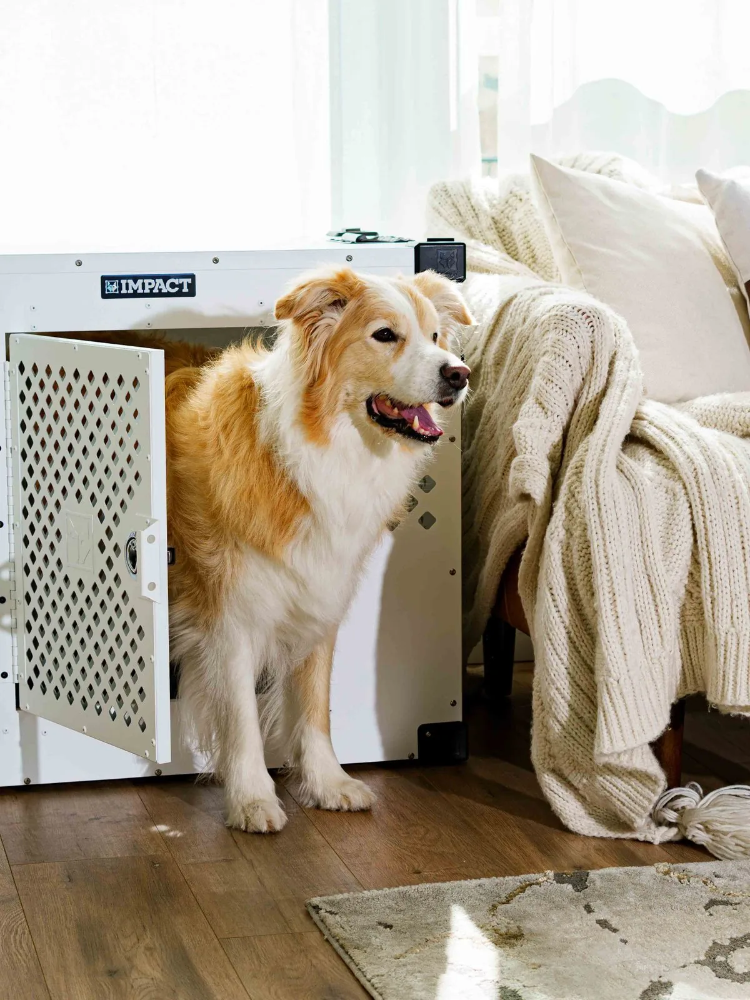

Checklist đồ dùng cần mua trước khi đón chó/mèo về nhà
Ngày đón chó hoặc mèo về nhà thường vui hơn bạn tưởng, và cũng rối hơn bạn tưởng. Bạn nhỏ vừa tới nơi lạ, vừa xa mẹ và anh chị em cùng lứa, vừa phải học mùi nhà mới, tiếng nhà mới và lịch sinh hoạt mới. Trong lúc đó, nếu bạn còn phải chạy đi mua bát ăn, khay vệ sinh hay vòng cổ, cả bạn và pet đều thêm mệt. Chuẩn bị trước không phải để mua thật nhiều, mà để ngày đầu tiên chỉ còn việc làm quen với nhau.
Bài viết này giúp người mới nuôi trả lời câu hỏi "cần mua gì trước, cái gì có thể để sau" bằng một bảng kiểm tra chia theo mức độ cần thiết, tách riêng cho chó và mèo ở những chỗ hai loài khác nhau. Bảng này tổng hợp từ hướng dẫn của ASPCA, American Kennel Club (AKC) và Hiệp hội Thú y Hoa Kỳ (AVMA), nhưng cách sắp xếp theo thời gian — trước khi đón, ngày đầu, tuần đầu — là cách sắp xếp riêng của bài viết, để bạn mua theo thứ tự dùng tới chứ không mua theo danh sách cửa hàng.
Lưu ý chung cho cả bài: thông tin ở đây chỉ mang tính tham khảo chung. Nếu thú cưng có dấu hiệu bất thường về sức khỏe, hãy liên hệ bác sĩ thú y. Lịch tiêm phòng và tẩy giun cụ thể được viết đầy đủ ở Bài 3, bài này chỉ nhắc việc đặt lịch khám đầu tiên.
Ba câu hỏi trước khi mở ví
Trước khi mua bất cứ thứ gì, hãy trả lời ba câu hỏi này. Câu trả lời sẽ quyết định bạn mua loại nào, cỡ nào, và cái gì không cần mua.
Thứ nhất, bạn đón chó hay mèo, và đón con non hay con trưởng thành? Chó con cần chuồng, tấm lót vệ sinh và đồ chơi gặm an toàn cho răng đang mọc. Mèo con cần khay vệ sinh thấp để trèo vào dễ, trụ cào nhỏ và chỗ trốn yên tĩnh. Chó trưởng thành có thể đã quen đi vệ sinh ngoài trời, mèo trưởng thành có thể đã quen một loại cát nhất định. Hỏi trước người giao pet — trại, trạm cứu hộ hay người chủ cũ — xem pet đã quen loại thức ăn nào, loại cát nào, có sợ tiếng ồn không. Giữ nguyên những thứ quen thuộc đó trong tuần đầu sẽ giúp pet bớt căng thẳng hơn là đổi mới toàn bộ cùng lúc.
Thứ hai, nhà bạn rộng bao nhiêu và có bao nhiêu người, có trẻ nhỏ hay vật nuôi khác không? Nhà chung cư nhỏ không cần chuồng quá lớn hay nhiều đồ cồng kềnh. Nhà có trẻ nhỏ cần cất kỹ đồ nhỏ dễ nuốt, thuốc và hóa chất tẩy rửa. Nhà đã có một con chó hoặc mèo cần chuẩn bị thêm bát ăn, khay vệ sinh và chỗ ngủ riêng cho con mới trong thời gian đầu, để hai con không phải tranh nhau ngay ngày đầu.
Thứ ba, bạn có thể dành bao nhiêu thời gian mỗi ngày trong tuần đầu? Chó con cần được dắt ra ngoài nhiều lần trong ngày. Mèo con cần người ngồi cùng, chơi nhẹ và quan sát xem nó ăn uống, đi vệ sinh có bình thường không. Nếu tuần đầu bạn bận rộn, hãy chuẩn bị kỹ hơn về chỗ ngủ yên tĩnh, đồ chơi tự chơi an toàn và lịch hẹn khám thú y đã đặt trước, thay vì mua thêm đồ chơi cầu kỳ.
Trả lời xong ba câu hỏi này, bạn sẽ thấy bảng dưới đây ngắn lại rất nhiều, vì nhiều món chỉ cần khi đúng hoàn cảnh của bạn.
Bảng checklist chính: cần trước ngày đón và có thể để sau
Bảng dưới đây chia đồ dùng thành hai mức: "Cần trước ngày đón" là những thứ pet cần ngay trong đêm đầu tiên hoặc ngày đầu tiên, "Có thể để sau" là những thứ giúp cuộc sống dễ hơn nhưng không gấp. Cột chó và mèo ghi rõ món nào chỉ dùng cho một loài.
| Nhóm | Món | Chó | Mèo | Mức độ |
|---|---|---|---|---|
| Chỗ ngủ và không gian riêng | Chuồng hoặc cũi quây, kèm tấm lót giặt được | Có | Thường không cần chuồng, cần chỗ trốn yên tĩnh | Cần trước ngày đón |
| Chỗ ngủ và không gian riêng | Giường hoặc đệm riêng, đặt ở góc yên tĩnh, tránh gió lùa | Có | Có | Cần trước ngày đón |
| Ăn uống | Thức ăn đúng độ tuổi mà pet đang ăn, đủ cho ít nhất hai tuần | Có | Có | Cần trước ngày đón |
| Ăn uống | Bát ăn và bát nước riêng, chắc chắn, dễ rửa | Có | Có | Cần trước ngày đón |
| Vệ sinh | Khay vệ sinh và cát vệ sinh cho mèo | Không | Có | Cần trước ngày đón |
| Vệ sinh | Túi đựng chất thải, tấm lót vệ sinh, chất tẩy rửa khử mùi an toàn cho thú cưng | Có | Có, túi đựng vẫn cần khi dọn khay | Cần trước ngày đón |
| Đi lại và nhận diện | Vòng cổ vừa vặn, thẻ tên có số điện thoại của bạn, dây dắt | Có | Vòng cổ cho mèo chỉ khi mèo đã quen và có khóa an toàn bung khi mắc kẹt; dây dắt không phải món bắt buộc cho mèo trong nhà | Cần trước ngày đón |
| Sức khỏe và giấy tờ | Lịch hẹn khám thú y đã đặt, hồ sơ tiêm và tẩy giun cũ (nếu có), số điện thoại phòng khám | Có | Có | Cần trước ngày đón |
| Chải chuốt | Bàn chải phù hợp loại lông, kềm cắt móng cho thú cưng, dầu gội dành riêng cho chó hoặc mèo | Có | Có | Có thể để sau vài ngày |
| Vui chơi | Vài món đồ chơi chắc chắn, đúng cỡ, không có chi tiết nhỏ dễ rơi ra | Có | Có | Cần trước ngày đón, chỉ cần vài món |
| Vui chơi | Trụ cào cho mèo, đồ chơi nhồi thức ăn để pet tự chơi | Không | Có | Có thể để sau vài ngày |
| An toàn trong nhà | Cổng chắn cầu thang hoặc cửa phòng, hộp cất thuốc và hóa chất, dây buộc gọn dây điện | Có | Có | Cần trước ngày đón |
Một điểm cần nói rõ: ASPCA và AKC đều nhấn mạnh vòng cổ phải kèm thẻ tên và dây dắt cho chó, còn với mèo trong nhà, việc đeo vòng cổ cần cân nhắc kỹ vì mèo hay chui rúc và có thể bị mắc kẹt. Nếu bạn nuôi mèo hoàn toàn trong nhà, ưu tiên hàng đầu không phải vòng cổ mà là khay vệ sinh sạch, chỗ trốn yên tĩnh và trụ cào. Ngược lại, với chó, dây dắt và thẻ tên là món không thể thiếu ngay từ lần ra ngoài đầu tiên.
Từng nhóm đồ dùng: chọn thế nào cho đúng
Chỗ ngủ: yên tĩnh quan trọng hơn đắt tiền
Pet mới về cần một góc riêng mà nó có thể rút về khi mệt hoặc sợ. Với chó, đó có thể là chuồng đặt ở góc phòng khách hoặc phòng ngủ, bên trong có tấm lót giặt được và một món đồ có mùi quen thuộc từ nơi cũ, ví dụ một chiếc khăn mà người giao pet cho bạn. Chuồng không phải chỗ phạt. Nếu bạn chỉ nhốt pet vào chuồng khi nó làm sai, nó sẽ sợ chuồng. Hãy để cửa chuồng mở trong ngày, đặt đồ ăn và đồ chơi bên trong, để pet tự ra vào.
Với mèo, chỗ ngủ lý tưởng thường là một góc cao hoặc một hộp kín có lối ra vào, đặt ở nơi ít người qua lại. Mèo mới về thường trốn vài giờ, thậm chí cả ngày đầu, và đó là phản ứng bình thường khi làm quen môi trường mới. Bạn không cần mua giường đắt tiền ngay. Một chiếc hộp carton lót khăn sạch, đặt ở góc yên tĩnh, thường được mèo chấp nhận nhanh hơn một chiếc giường mới cứng và có mùi lạ.
AVMA khuyên người nuôi cung cấp chỗ ở trong nhà phù hợp, có chỗ nghỉ ngơi và không gian sống đủ cho sức khỏe và sự an toàn của pet. Bạn không cần làm đúng theo một mẫu nhà nào, chỉ cần đảm bảo chỗ ngủ khô ráo, tránh gió lùa, tránh gần bếp và nhà vệ sinh, và pet có thể tới được bát nước mà không phải đi qua chỗ ồn ào.
Ăn uống: giữ nguyên thức ăn cũ trong hai tuần đầu
Đây là lỗi người mới nuôi hay mắc nhất: đổi thức ăn ngay ngày đầu vì muốn cho pet ăn loại "tốt hơn". Hệ tiêu hóa của chó mèo con rất nhạy cảm với thay đổi đột ngột. Nguyên tắc chung khi đổi thức ăn là đổi dần trong vài ngày, trộn tăng dần thức ăn mới vào thức ăn cũ, và hỏi bác sĩ thú y trước khi đổi. Trong hai tuần đầu, tốt nhất là giữ đúng loại thức ăn mà pet đã ăn ở nơi cũ.
Bát ăn nên chọn loại chắc chắn, khó lật, dễ rửa. Bát bằng thép không gỉ hoặc sứ thường dễ vệ sinh hơn bát nhựa, vì nhựa dễ xước và đọng mùi. Bát nước luôn phải có nước sạch, đặt ở chỗ pet dễ tới, và rửa thường xuyên. Với mèo, một số con thích bát nông và rộng, vì râu của chúng chạm vào thành bát hẹp sẽ khó chịu. Bạn không cần mua bát chuyên dụng đắt tiền ngay; hãy bắt đầu bằng bát nông, rộng, dễ rửa, rồi quan sát xem mèo có ăn uống thoải mái không.
Vệ sinh: khay cho mèo, thói quen cho chó
Với mèo, quy tắc mà nhiều hướng dẫn nuôi mèo nhắc tới là chuẩn bị khay vệ sinh trước khi mèo về, đặt ở nơi yên tĩnh, dễ tiếp cận, tránh gần bát ăn. Mèo con cần khay thấp để trèo vào dễ. Cát vệ sinh nên giữ đúng loại mèo đã quen trong tuần đầu. Dọn khay hằng ngày không chỉ để sạch mà còn để bạn sớm nhận ra thay đổi trong thói quen đi vệ sinh của mèo — và thay đổi đó là một trong những dấu hiệu nên lưu ý để hỏi bác sĩ thú y, như Bài 5 sẽ nói kỹ hơn.
Với chó, bạn cần tấm lót vệ sinh, túi đựng chất thải và chất tẩy rửa khử mùi. Chất tẩy rửa nên chọn loại ghi rõ an toàn cho thú cưng, và dùng theo hướng dẫn trên nhãn. Dắt chó ra ngoài đi vệ sinh theo giờ cố định trong ngày sẽ giúp chó học nhanh hơn là chỉ đặt tấm lót trong nhà và hy vọng nó tự tìm tới. AKC khuyên hạn chế không gian của chó mới trong những ngày đầu bằng cổng chắn hoặc cũi quây, rồi mở rộng dần khi chó đã quen lịch sinh hoạt của nhà.
Đi lại và nhận diện: đừng đợi tới lúc pet chạy mất mới mua
Vòng cổ cho chó phải vừa vặn: bạn luồn được hai ngón tay giữa vòng cổ và cổ chó, không quá chật, không quá lỏng để tuột ra. Thẻ tên ghi số điện thoại của bạn là món rẻ tiền nhưng hữu ích nhất khi chó đi lạc. Dây dắt nên chọn loại không tự thu dài quá mức trong những buổi đi đầu, vì bạn cần kiểm soát được chó con chưa quen đường.
Về gắn chip định danh, AVMA khuyên đảm bảo pet được nhận diện đúng cách và thông tin đăng ký luôn được cập nhật. Bạn không cần quyết định ngay trong ngày đón, nhưng nên hỏi bác sĩ thú y ở buổi khám đầu tiên xem pet đã được gắn chip chưa, và nếu chưa thì khi nào nên làm. Đây là việc nên hỏi ở phòng khám, không phải việc tự làm tại nhà.
Chải chuốt và vui chơi: ít mà đúng
Bạn không cần mua cả bộ chải chuốt trong ngày đầu. Chỉ cần một chiếc bàn chải phù hợp loại lông và một chiếc kềm cắt móng dành cho thú cưng, để làm quen dần. Cách tắm, chải lông và cắt móng chi tiết được viết đầy đủ ở Bài 4, bài này chỉ nhắc bạn mua đúng loại dầu gội dành riêng cho chó hoặc mèo, không dùng dầu gội của người cho pet.
Đồ chơi cũng vậy: chỉ cần vài món chắc chắn, đúng cỡ, không có mắt nhựa hay chi tiết nhỏ dễ rơi ra mà pet có thể nuốt. Đồ chơi gặm cho chó con nên chọn loại mềm vừa phải cho răng đang mọc, không quá cứng. Đồ chơi cho mèo nên có trụ cào đi kèm, vì mèo cần cào để mài móng và đánh dấu lãnh thổ. Xoay vòng đồ chơi vài ngày một lần sẽ giúp pet đỡ chán hơn là mua nhiều đồ chơi cùng lúc.
Dọn nhà an toàn trước khi pet về: đi một vòng ở tầm mắt của pet
Trước ngày đón, hãy dành 30 phút đi một vòng quanh nhà ở tầm thấp, như thể bạn là một chú chó con hay mèo con tò mò. AKC khuyên cách này: quỳ xuống, nhìn ở tầm mặt đất, bạn sẽ thấy những thứ mà khi đứng bạn không để ý — dây điện thòng xuống, túi nilon, đồ nhỏ rơi dưới gầm tủ, lọ thuốc để thấp.
Những việc nên làm trong vòng dọn nhà này:
- Buộc gọn hoặc cất dây điện, dây sạc khỏi tầm gặm và cào.
- Cất thuốc của người, vitamin, hóa chất tẩy rửa và đồ vệ sinh vào tủ có khóa hoặc kệ cao, đóng kín.
- Dọn thức ăn của người khỏi bàn thấp và thùng rác không có nắp. Danh sách thức ăn của người có thể gây hại cho chó mèo được viết đầy đủ ở Bài 2; ở đây bạn chỉ cần nhớ nguyên tắc là không để thức ăn của người trong tầm với của pet.
- Kiểm tra cây trong nhà. Một số cây cảnh có thể gây hại cho chó mèo nếu chúng gặm lá. Nếu bạn không chắc một loại cây có an toàn không, hãy đặt cây ra khỏi tầm với hoặc hỏi bác sĩ thú y trước khi pet về.
- Dọn đồ nhỏ dễ nuốt: dây chun, kẹp tóc, đồng xu, đồ chơi trẻ em có chi tiết nhỏ, tất và khăn nhỏ. Chó con đặc biệt hay nuốt những thứ này khi chơi.
- Chuẩn bị một phòng yên tĩnh làm "phòng riêng" trong hai ba ngày đầu, với đầy đủ bát nước, chỗ ngủ, khay vệ sinh (cho mèo) hoặc tấm lót (cho chó), và đồ chơi. Khi pet đã quen mùi nhà, bạn mở rộng không gian dần.
Những thứ không cần mua ngày đầu
Mua thừa không chỉ tốn tiền mà còn làm pet rối. Những món sau đây có thể để sau khi bạn đã hiểu pet của mình:
- Nhiều loại quần áo cho pet. Trừ khi bác sĩ thú y dặn vì lý do sức khỏe, chó mèo khỏe mạnh thường không cần mặc quần áo trong nhà.
- Nhiều loại thức ăn vặt và xương gặm. Một ít đồ ăn thưởng để huấn luyện là đủ. Xương nấu chín không nên cho chó mèo gặm, vì xương nấu chín có thể vỡ thành mảnh sắc. Bạn sẽ đọc kỹ hơn về các món ăn cần tránh ở Bài 2.
- Máy cho ăn tự động, camera theo dõi đắt tiền, giường sưởi. Những món này có thể hữu ích sau này, nhưng không quyết định ngày đầu tiên có suôn sẻ hay không.
- Nhiều loại dầu gội, nước hoa cho pet. Một loại dầu gội dành riêng cho chó hoặc mèo là đủ; tắm quá nhiều có thể làm khô da.
Tuần đầu tiên: lịch trình quan trọng hơn đồ dùng
Đồ dùng chỉ là một nửa. Nửa còn lại là lịch trình. Trong tuần đầu, hãy giữ giờ ăn, giờ đi vệ sinh, giờ chơi và giờ ngủ càng cố định càng tốt. Chó và mèo đều học bằng thói quen lặp lại. Nếu hôm nay bạn cho ăn lúc 7 giờ, mai cho ăn lúc 10 giờ, ngày kia cho ăn lúc 6 giờ, pet sẽ khó đoán được khi nào được ăn và dễ lo lắng.
Hãy đặt lịch hẹn khám thú y trong tuần đầu tiên, và mang theo hồ sơ cũ nếu có: sổ tiêm, giấy tẩy giun, giấy nhận nuôi hoặc giấy từ trại. Ở buổi khám này, bác sĩ thú y sẽ kiểm tra tổng quát, tư vấn lịch tiêm và tẩy giun phù hợp, và trả lời những câu hỏi riêng cho con vật của bạn. Lịch tiêm và tẩy giun theo tuổi được viết đầy đủ ở Bài 3, nhưng lịch thực tế cho từng con vẫn do bác sĩ thú y quyết định sau khi khám.
Trong hai ba ngày đầu, hãy để pet làm quen từ từ. ASPCA khuyên không nên để chó mới ở nhà một mình trong 48 giờ đầu, và nên tạo không gian an toàn yên tĩnh cho pet. Đừng mời nhiều khách tới thăm ngay, đừng dắt chó mới đi nhiều nơi lạ ngay, đừng tắm hay cắt móng ngay ngày đầu. Những việc này có thể chờ tới khi pet đã ăn uống và ngủ nghỉ bình thường.
Lỗi thường gặp của người mới nuôi
- Mua chuồng quá lớn cho chó con mà không có vách ngăn, khiến chó con dùng một góc làm chỗ vệ sinh.
- Đổi thức ăn ngay ngày đầu, rồi nghĩ pet bị bệnh khi nó đi phân lỏng.
- Mua quá nhiều đồ chơi cùng lúc, rồi không biết món nào pet thích, món nào không an toàn.
- Quên đặt lịch khám thú y, tới khi pet có dấu hiệu bất thường mới vội tìm phòng khám.
- Để thuốc, hóa chất và thức ăn của người trong tầm với, rồi phải xử lý hậu quả sau.
Nếu bạn tránh được năm lỗi này, tuần đầu tiên sẽ nhẹ nhàng hơn rất nhiều, dù bạn không mua đủ mọi món trong danh sách.
Kết luận
Bạn không cần mua mọi thứ trước khi đón chó hoặc mèo về nhà. Bạn chỉ cần chuẩn bị đủ cho đêm đầu tiên và ngày đầu tiên: chỗ ngủ yên tĩnh, thức ăn quen thuộc, bát ăn và bát nước sạch, khay vệ sinh cho mèo hoặc tấm lót cho chó, vòng cổ và thẻ tên cho chó, lịch hẹn khám thú y đã đặt, và một căn nhà đã được dọn an toàn. Những món còn lại có thể mua sau khi bạn đã hiểu pet của mình hơn.
Hãy in hoặc lưu lại bảng checklist ở trên, đánh dấu từng món khi đã mua, và ghi chú bên cạnh món nào bạn đã mua loại nào, để lần sau mua lại không phải nhớ lại từ đầu. Khi pet đã quen nhà, bạn có thể quay lại Bài 2 để rà soát thức ăn trong nhà, Bài 3 để theo dõi lịch tiêm và tẩy giun, và Bài 4 để bắt đầu thói quen chải chuốt hằng tuần.

Nguồn tham khảo
- ASPCA, "Supplies List for Newly Adopted Dogs" — danh sách đồ dùng cơ bản cho chó mới nhận nuôi, gồm bát ăn, chuồng, giường, đồ chơi, vòng cổ, dây dắt, chất tẩy rửa khử mùi (truy cập 23/11/2026): https://www.aspca.org/pet-care/general-pet-care/supplies-list-newly-adopted-dogs
- American Kennel Club (AKC), "Time to Get a New Puppy? Here's What You Need to Know" — hướng dẫn chuẩn bị nhà, danh sách mua sắm, tìm bác sĩ thú y trước khi đón chó con (truy cập 23/11/2026): https://www.akc.org/expert-advice/training/preparing-for-a-new-puppy/
- American Veterinary Medical Association (AVMA), "Pet ownership guidelines" — khuyến nghị về thức ăn, nước, chỗ ở, chăm sóc sức khỏe phòng ngừa và nhận diện thú cưng (truy cập 23/11/2026): https://www.avma.org/resources-tools/avma-policies/pet-ownership-guidelines
- ASPCA, "Tips for a New Dog" — hướng dẫn cho chó mới về nhà, gồm cố gắng không để chó ở nhà một mình trong 48 giờ đầu và tạo không gian an toàn yên tĩnh (truy cập 23/11/2026): https://www.aspca.org/pet-care/general-pet-care/tips-new-dog